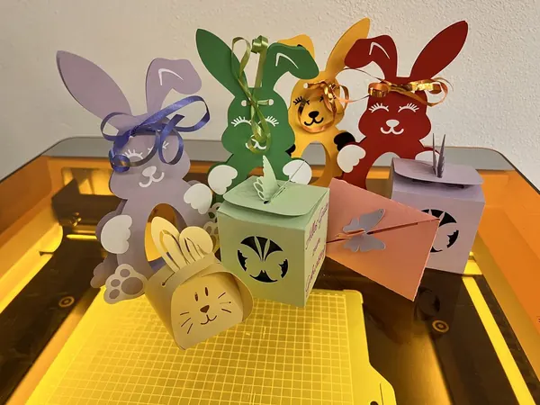
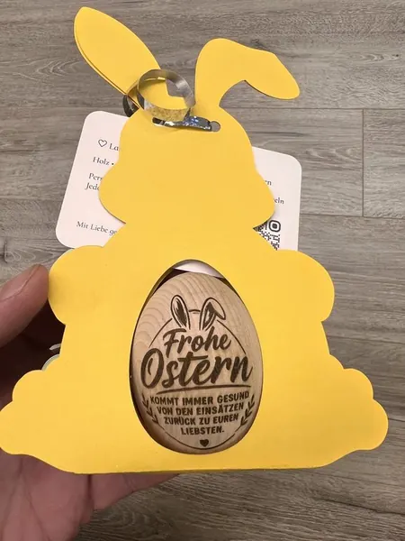
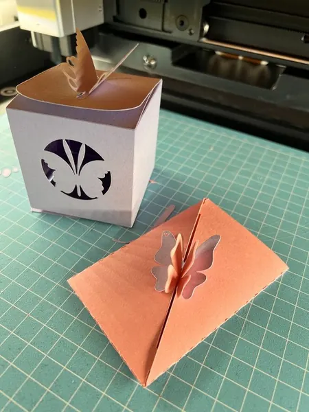
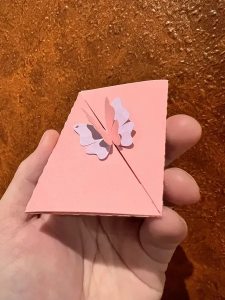
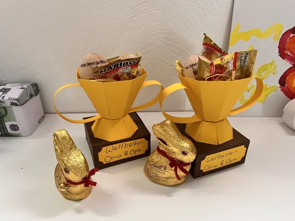
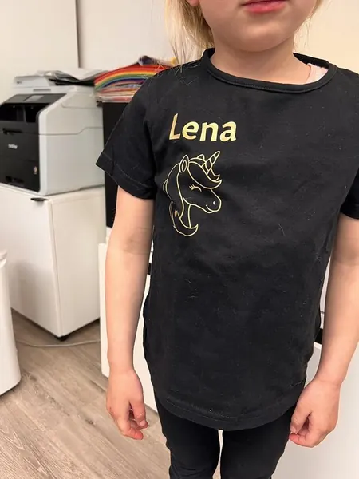

Verpackungen mit Persönlichkeit
Individuelle Papierverpackungen: Hasen für gravierte Ostereier, kleine Boxen und filigran gestaltete Umschläge.
Materialien / Papier
Individuelle Arbeiten von Herzmade aus Döbern. Lass dich inspirieren und bring deine eigene Idee mit.
Ein persönliches Werkstück verdient eine Verpackung, die genauso besonders ist. Wir gestalten passende Papierboxen, Umschläge mit filigranen Ausschnitten und liebevolle Verpackungen für deine Einzelstücke – zum Beispiel unsere Osterhasen für gravierte Ostereier.
Für diese Arbeiten tauschen wir die Lasereinheit gegen ein geführtes Messer aus. Damit schneiden wir Papier, Karton und Folien präzise in Form: von feinen Ornamenten bis zur individuell passenden Verpackung.
Ausgeschnittene Bügelfolie bringt Namen und Wunschmotive auf T-Shirts. Mit Klebefolie lassen sich Gegenstände persönlich gestalten. Motiv, Farbe und Ausführung besprechen wir gemeinsam.
Verpackungen gibt es ab 3,00 € pro Stück, je nach Größe und Gestaltung. Die abgebildeten Inhalte und Werkstücke sind separat erhältlich. Folienarbeiten stimmen wir individuell mit dir ab.
So persönlich kann Papier sein
Echte Einzelstücke aus unserer Werkstatt.
Tippe auf ein Bild für die Großansicht.

Individuelle Papierverpackungen: Hasen für gravierte Ostereier, kleine Boxen und filigran gestaltete Umschläge.

Bunte Hasenverpackungen aus Papier mit Ausschnitten und Schleifen, passend für gravierte Ostereier.

Gelbe Hasenverpackung mit ausgeschnittenem Fenster, in dem das gravierte Osterei sichtbar bleibt.

Papierbox mit feinem Ausschnitt und ein Umschlag mit plastisch abstehenden Schmetterlingen.

Rosafarbener Papierumschlag mit filigran ausgeschnittenem Schmetterlingsverschluss.

Grüne und violette Papierboxen mit Ausschnitten, Schmetterling und persönlichem Geburtstagsgruß.

Goldfarbene Pokalverpackungen aus Papier, gefüllt mit kleinen Aufmerksamkeiten.

Schwarzes T-Shirt mit ausgeschnittener und aufgebügelter Folie: der Name Lena und ein Einhornmotiv.
Von deiner Idee zum Einzelstück
Wähle ein Produkt und lass dich von unseren Arbeiten inspirieren.
Erzähl uns vom Anlass, deinem Wunschmotiv und dem Menschen, dem du eine Freude machen möchtest.
Gestaltung, Ausführung und Preis stimmen wir persönlich mit dir ab.